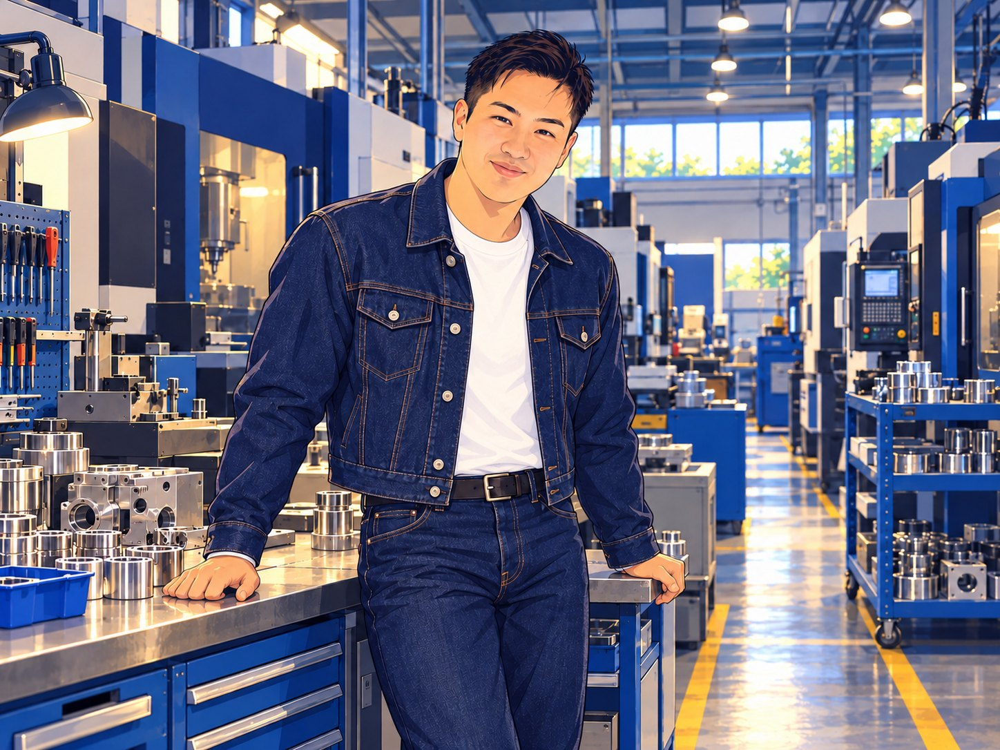
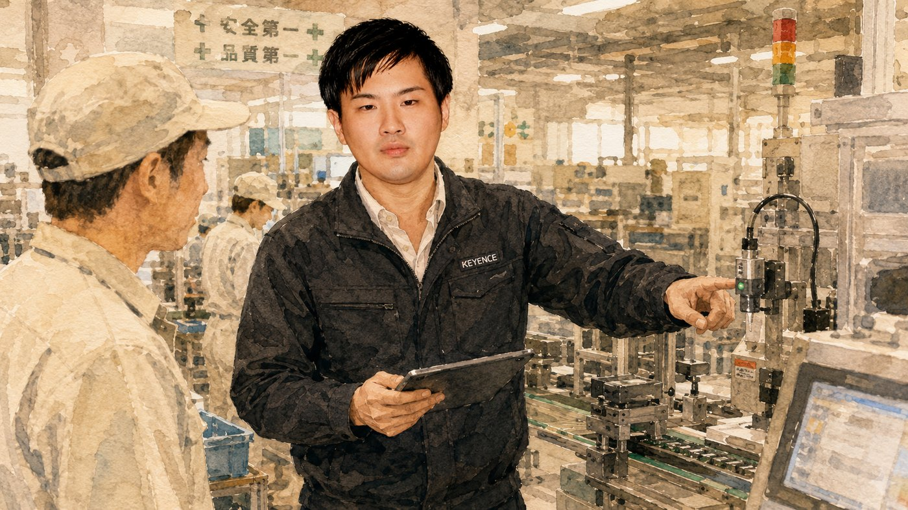
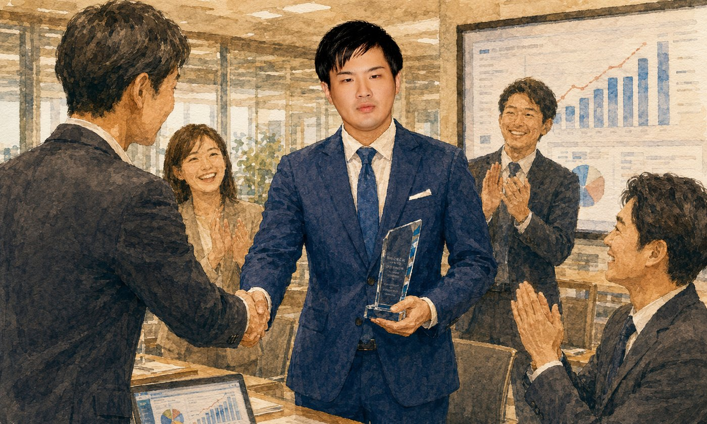
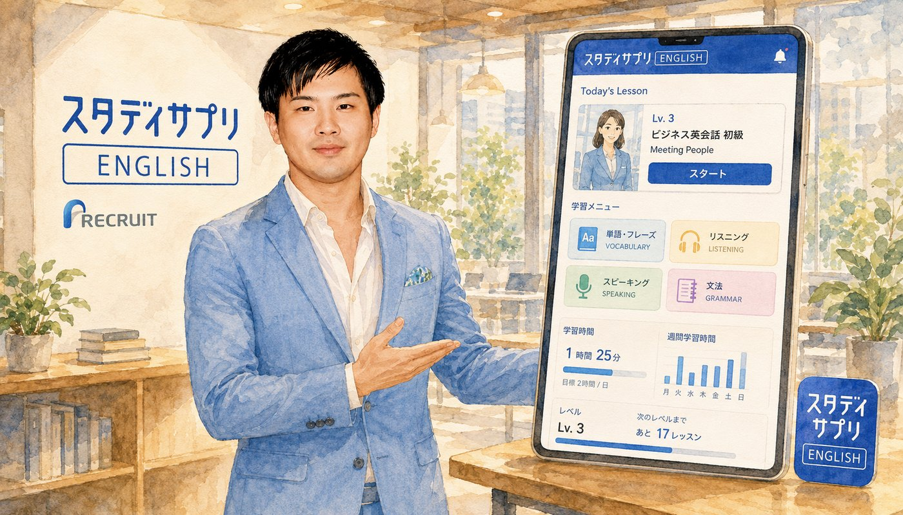
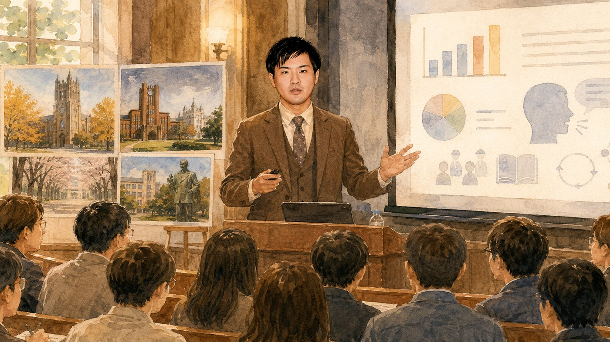
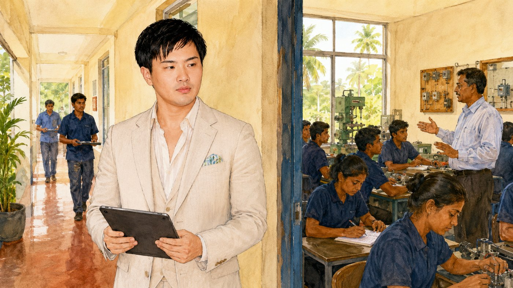
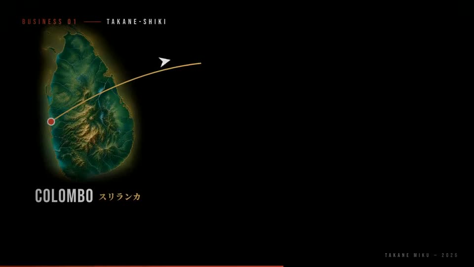
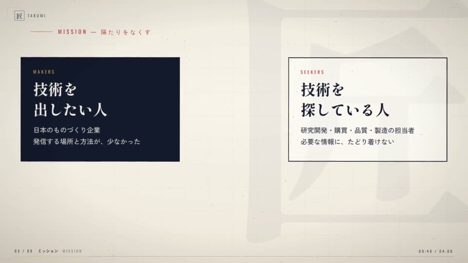
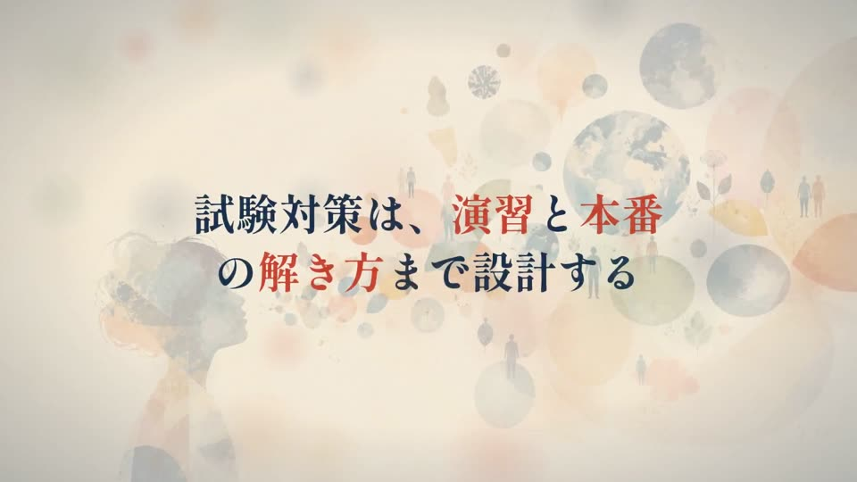

制造业媒体
TAKUMI～匠～
制造业有活力，日本就一定有活力
消除阻碍日本制造业的信息传递壁垒，打破制造业界关于广告费的既有观念与价格，追求本应有的收益结构。尤其致力于为大田区的制造企业做贡献，振兴行业。
takumi-nippon.com高根未来Takane Miku 株式会社TAGIRI 代表董事
让人心中的志向沸腾
联系方式在这里Share-Me 观看自我介绍视频会员简历表





曾在英国和美国的大学求学，走访了49个国家。
培育一家「让人心中的志向沸腾」的公司。
日本制造业中有许多尚未被充分了解的技术，以及支撑这些技术的人们的心意。我希望传递这些价值，创造更多与需要它们的企业和研究者相遇的机会。运用自己积累的销售・事业开发经验和人脉，成为挑战者和企业的助力。
对我来说，与培育过我、与我共度时光的人们之间的羁绊和回忆，是真正的宝物。当我抓住重要成果时，希望他们能尽可能多地在我身边。如果正在读这段文字的你也能成为其中一员，我会无比幸福。
剑道・日本拳法段位持有者，并取得芳香疗法检定1级。曾加入自卫队，也曾在日本环球影城打工。
大学学习分子神经细胞学和教育工学，对人的身体、心灵和学习的关注，也延续到了现在的工作中。
超级喜欢甜食。也喜欢灵异故事、妖怪、UMA等被归为神秘学的东西。
心理不算强大，所以会一边看旧照片一边沉浸在回忆里来调节自己。
尊重所有相关的人，也努力让自己为自己的活动和经历感到自豪（至少让每一天都能这样想）。
另一方面，独立经营时也难免遇到不正当、傲慢、不洁或危险的邀约与人。很抱歉，对于此类情况我会坚决拒绝。
现在主要在斯里兰卡、韩国和越南
开展业务合作。
GAINS工作表
制造业技术、企业与研究者的挑战、销售战略、事业开发、教育、分子神经细胞学、东洋哲学。
私下则关注海外旅行、语言、读书、电影、当代艺术和东京美食。
我走访过2,500家以上的制造业现场。在基恩士，非接触测量仪的企业销售全国第一。在现场被工匠和社长训斥的过程中，我用身体记住了看技术的方法，以及「怎样传达才能让价值抵达」。
此后在AWS负责企业客户成功，在Recruit负责企业教育事业的事业开发。同时以董事・部门负责人身份参与6家初创公司的经营，在制造业DX、入境游媒体、艺术画廊、上市公司子公司等不同行业，经历了公司的创建与销售机制的搭建。
了解制造业、IT、教育三个现场，并且不仅思考「什么是优秀的」，更能想透「对谁、用什么语言传达才能抵达」。这正是我通过制造业媒体「TAKUMI～匠～」传递企业技术与举措，拓展与制造企业、服务商、大型厂商实务人员、大学和研究机构相遇的优势所在。
「您是否希望让更多人了解贵公司的技术和举措？有一位高根先生，曾在基恩士从事制造业销售，现在运营制造业专业信息媒体『TAKUMI～匠～』。他不仅在寻找制造企业，也在寻找面向制造业的服务商、大型厂商的采购・开发・研究人员，以及大学等研究机构的联系。要不要我为您介绍一下？」
我擅长思考销售战略。「向谁、传递什么、如何传递」「如何重组现有的销售」等问题，随时欢迎咨询。
销售类服务、撮合平台、社群的推介，以及销售代理的委托，还请见谅不予受理。
我们从语言教育的角度参与外国人才培养，对就业和接收也有相关经验。
这类咨询同样不收取费用。
会说的语言每多一种，
能爱的世界就多一分。
业务概要

制造业媒体
制造业有活力，日本就一定有活力
消除阻碍日本制造业的信息传递壁垒，打破制造业界关于广告费的既有观念与价格，追求本应有的收益结构。尤其致力于为大田区的制造企业做贡献，振兴行业。
takumi-nippon.com日语教育・人才
会说的语言越多，能爱的世界就越大
跨越地理和经济的限制，把极其高效、质量稳定的语言教育，随时、随地、低价地送到每一个人手中。
现在也参与人才事业，在斯里兰卡从事语言教育。愿为斯里兰卡的人们尽一份力，并让这份努力也连接到日本的幸福。


